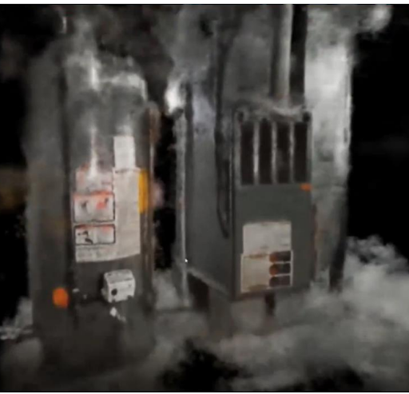

xxxx
Computer Engineer, Mathematician
Design Portfolio

Figure 1: NeRF Rendering of HVAC System
 Figure 2:CAD Model of a Mining Robot
Figure 2:CAD Model of a Mining Robot
 Figure 3:Recreation of XMB Home Screen
Figure 3:Recreation of XMB Home Screen
 Figure 4: particle Simulation of Bodies About a Black Hole
Figure 4: particle Simulation of Bodies About a Black Hole
 Figure 5: NeRF Rendering Text on a Coke-a-Cola Can
Figure 5: NeRF Rendering Text on a Coke-a-Cola Can Figure 6: NeRF Rendering reflective surface on a Coke-a-Cola Can
Figure 6: NeRF Rendering reflective surface on a Coke-a-Cola Can
 Figure 7: Matlab display of an STL Model
Figure 7: Matlab display of an STL Model
 Figure 8: NeRF rendering of an HVAC System
Figure 8: NeRF rendering of an HVAC System
 Figure 9: FEA of a cube with pressure applied
Figure 9: FEA of a cube with pressure applied
 Figure 10: COLMap Program with generated camera positions and angles
Figure 10: COLMap Program with generated camera positions and angles  Figure 11: Picture of the flight controller and connected motors taken with the on board camera
Figure 11: Picture of the flight controller and connected motors taken with the on board camera
 Figure 12: Complete prototype drone
Figure 12: Complete prototype drone
 Figure 13: Block Diagram of the Hardware structure
Figure 13: Block Diagram of the Hardware structure
 Figure 14: Block diagram the data processing system
Figure 14: Block diagram the data processing system
 Figure 15: Ardupilot autopilot route for around an University building
Figure 15: Ardupilot autopilot route for around an University building
 Figure 16: User Interface
Figure 16: User Interface  Figure 19: Planned routing for navigating the arena
Figure 19: Planned routing for navigating the arena
 Figure 20: CAD Rendering of UA NASA Robotics Mining Team 2022-2023 Robot, software written by xxx
Figure 20: CAD Rendering of UA NASA Robotics Mining Team 2022-2023 Robot, software written by xxx
 Figure 21: Jetson Nano SBC
Figure 21: Jetson Nano SBC
 Figure 22: Robotic Operating System used for governing autonomy
Figure 22: Robotic Operating System used for governing autonomy  Figure 23: Electrical/Software Members Soldering
Figure 23: Electrical/Software Members Soldering
 Figure 24: Software Member working on SBC
Figure 24: Software Member working on SBC
 Figure 25: Software Team photo
Figure 25: Software Team photo
 Figure 26: Github project organization
Figure 26: Github project organization
 Figure 28: University of Akron NASA Robotics Mining Team Github Page
Figure 28: University of Akron NASA Robotics Mining Team Github Page  Figure 30: Weather data pulled from the internet
Figure 30: Weather data pulled from the internet
 Figure 31: Original home screen the design is based off of
Figure 31: Original home screen the design is based off of
 Figure 32: Icon hovered over with mouse cursor presents clickable link
Figure 32: Icon hovered over with mouse cursor presents clickable link
 Figure 33: Time, Data, and Weather data presented
Figure 33: Time, Data, and Weather data presented
 Figure 35: Second example of large mass particles orbiting a black hole
Figure 35: Second example of large mass particles orbiting a black hole
 Figure 36: Python Implementation of a Runge-Kutta 4th Solver
Figure 36: Python Implementation of a Runge-Kutta 4th Solver
 Figure 37: Python Implementation of Schwarzschild geodesic equations
Figure 37: Python Implementation of Schwarzschild geodesic equations
 Figure 38: Jean-Pierre Luminet’s Simulation of a Black Hole 1978
Figure 38: Jean-Pierre Luminet’s Simulation of a Black Hole 1978